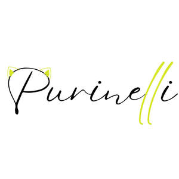

Trade Mark Journal No.2025/016 18 April 2025
UK00004184173 4 April 2025 (12,18,25,35)

- Class 12
- Baby strollers; Baby carriages; Baby, infant and child seats for vehicles; Covers for baby strollers; Baby carriages [prams]; Prams [baby carriages]; Canopies for baby strollers; Covers for baby carriages; Baby carriages (Covers for -); Baby carriage canopies; Perambulators for babies; Hoods for baby carriages; Rubber baby buggy bumpers; Carriages for babies; Fitted footmuffs for baby carriages.
- Class 18
- Bags; Tote bags; Luggage bags; Duffle bags; Duffel bags; Carry-on bags; Toiletry bags; Bags for clothes; Carry-all bags; Drawstring bags; Belt bags and hip bags; Nose bags [feed bags]; Bags (Nose -) [feed bags]; Carrying bags; Grocery tote bags; Cross-body bags; Bags for umbrellas; Diaper bags; Luggage, bags, wallets and other carriers; Crossbody bags; Cloth bags; Bucket bags; Sling bags; Nappy bags; Leather bags; Canvas bags; Belt bags; Duffel bags for travel; Clutch bags; Shoe bags; Wheeled bags; Kit bags; Messenger bags; Souvenir bags; Travel bags; Bags for travel; Leather bags and wallets; Garment bags; Shoulder bags; Toilet bags; Make-up bags; Waterproof bags; Cosmetic bags; Reusable shopping bags; Makeup bags; Umbrella bags; Bags for carrying pets; Gym bags; Knitted bags; Bags [envelopes, pouches] of leather, for packaging; Bags [envelopes, pouches] for packaging of leather; Bags [envelopes, pouches] of leather for packaging; Hand bags; Attaché bags; Travelling bags; Cabin bags; Flight bags; Overnight bags; Traveling bags; Beach bags; Bags for climbers; Mesh shopping bags; Mesh bags for shopping; Boot bags; Leather shopping bags; Canvas shopping bags; Bum bags; Frames for bags [structural parts of bags]; Knitting bags; Hiking bags; Roller bags; Wash bags for carrying toiletries; Suit bags; Baby carrying bags; Hunting bags; Nose bags; Feed bags; Gladstone bags; Waist bags; Kid; School backpacks; Baby backpacks; Bags for school; School bags; Backpacks for carrying babies; School knapsacks.
- Class 25
- Clothing; Knitwear [clothing]; Jackets [clothing]; Ready-to-wear clothing; Woolen clothing; Furs [clothing]; Garments for protecting clothing; Layettes [clothing]; Clothing layettes; Linen clothing; Headbands [clothing]; Headbands for clothing; Gloves [clothing]; Gloves as clothing; Clothes; Aprons [clothing]; Kerchiefs [clothing]; Maternity clothing; Jerseys [clothing]; Denims [clothing]; Shorts [clothing]; Cashmere clothing; Capes (clothing); Oilskins [clothing]; Gabardines [clothing]; Silk clothing; Leather clothing; Clothing of leather; Leather (Clothing of -); Collars [clothing]; Parts of clothing, footwear and headgear; Knitted clothing; Veils [clothing]; Hoods [clothing]; Windproof clothing; Embroidered clothing; Corsets [clothing, foundation garments]; Wristbands [clothing]; Bandeaux [clothing]; Belts [clothing]; Belts for clothing; Rainproof clothing; Waterproof clothing; Casual clothing; Visors [clothing]; Jackets being sports clothing; Jackets (Stuff -) [clothing]; Stuff jackets [clothing]; Bottoms [clothing]; Playsuits [clothing]; Ready-made clothing; Clothing for leisure wear; Latex clothing; Trunks being clothing; Woven clothing; Infant clothing; Leisure clothing; Drawers [clothing]; Drawers as clothing; Ties [clothing]; Clothing for sports; Sports clothing; Athletic clothing; Clothing for children; Muffs [clothing]; Bodies [clothing]; Clothing for babies; Tops [clothing]; Clothing for infants; Clothing for cycling; Weatherproof clothing; Pockets for clothing; Fabric belts [clothing]; Water-resistant clothing; Triathlon clothing; Handwarmers [clothing]; Clothing for skiing; Beach clothing; Chaps (clothing); Thermal clothing; Cowls [clothing]; Men's clothing; Fishing clothing; Dance clothing; Mitts [clothing]; Braces for clothing; Baby bodysuits; Baby clothes; Baby shoes; Baby pants; Baby doll pyjamas; Baby sandals; Baby bottoms; Baby layettes for clothing; Plastic baby bibs; Baby tops; Baby boots; Knitted baby shoes; Baby bibs [not of paper]; Underpants for babies; Bootees (woollen baby shoes); Underwear; Jockstraps [underwear]; Briefs [underwear]; Sweat-absorbent underclothing [underwear]; Trunks [underwear]; Sweat-absorbent underwear; Underwear (Anti-sweat -); Anti-sweat underwear; Maternity underwear; Boy shorts [underwear]; Disposable underwear; Knitted underwear; Undergarments; Underwear for women; Thermal underwear; Underpants; Babies' pants [underwear]; Men's underwear; Functional underwear; Underclothes; Women's underwear; Gussets for underwear [parts of clothing]; Long underwear; Nappy pants [clothing]; Teddies [undergarments]; Panties; Ladies' underwear; Lingerie; Slips [undergarments]; Knickers; Pants; G-strings; Babies' pants [clothing]; Trousers shorts; Thongs; Jogging bottoms [clothing]; Underclothing; Maternity lingerie; Maternity pants; Teddies [underclothing]; Thong sandals; Denim pants; Camouflage pants; Waterproof pants; Leggings [trousers]; Dress pants; Trouser socks; Pajamas; Undershirts; Underclothing (Anti-sweat -); Anti-sweat underclothing; Corsets [underclothing]; Sweat-absorbent underclothing; Socks and stockings; Bodices [lingerie]; Pyjamas; Braces for clothing [suspenders]; Jogging pants; Bra straps [parts of clothing]; Anti-perspirant socks; Leather pants; Trousers; Braces [suspenders] for clothing / Suspenders [braces] for clothing; Maternity shorts; Slips [underclothing]; Gussets for tights [parts of clothing]; Babies' undergarments; Hosiery; Swimsuits; Sleep pants; Beach clothes; Slips [clothing]; Nipple pasties being underclothing; Cycling pants; Sweat-absorbent socks; Maillots [hosiery]; Bed socks; Bras; Pantyhose; Sweatpants; Moisture-wicking sports pants; Womens' undergarments; Warm-up pants; Socks for infants and toddlers; Dresses for infants and toddlers; Overalls for infants and toddlers; Trousers for children; Swim wear for children; Snap crotch shirts for infants and toddlers; One-piece clothing for infants and toddlers; Clothing for men, women and children.
- Class 35
- Advertisement and publicity services by television, radio, mail; Business management of wholesale and retail outlets; Business management of retail outlets; Retail store services in the field of clothing; Administration of the business affairs of retail stores; Online retail store services in relation to clothing; Online retail store services relating to clothing; Retail services in relation to footwear; Retail services in relation to clothing; Retail services in relation to toys; Management of a retail enterprise for others; Online retail services relating to clothing; Retail services relating to clothing; Retail services in relation to fashion accessories; Retail services in relation to pet products; Retail services in relation to bags; Business management of wholesale outlets; Retail services in relation to fabrics; Retail services in relation to clothing accessories; Retail services in relation to pushchairs; Online retail services relating to handbags; Retail services in relation to stationery supplies; Mail order retail services for clothing accessories; Retail services connected with the sale of clothing and clothing accessories; Marketing; Advertising and marketing; Influencer marketing; Advertising and marketing services; Product marketing; Affiliate marketing; Marketing, advertising and promotion services; Advertising, marketing and promotional services; Advertising, promotional and marketing services; Marketing, advertising, and promotional services; Online marketing; Internet marketing; Marketing research and analysis; Marketing research or analysis; Providing marketing consulting in the field of social media.
Purinelli LTD